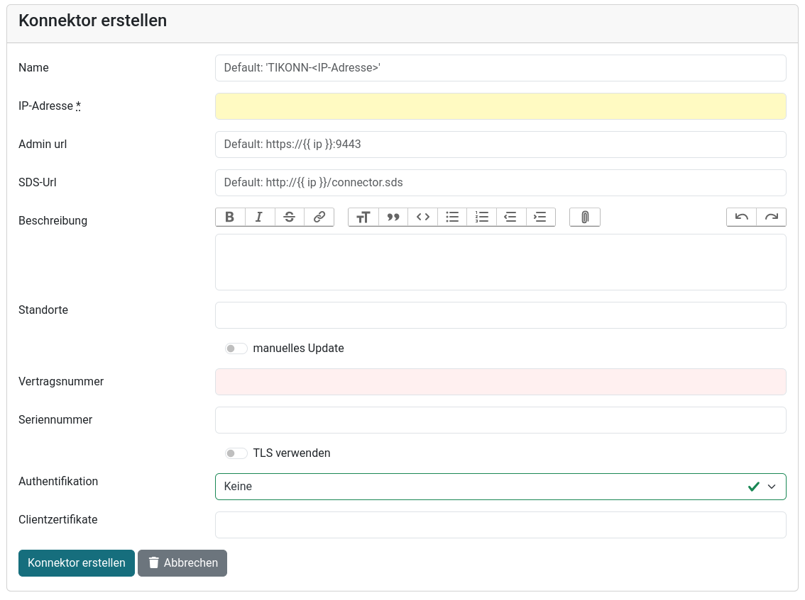
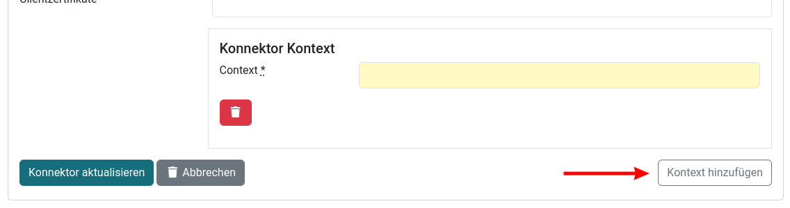

Erste Schritte
Konnektorzugriff einrichten (ohne Authentifikation)
-
Kontext anlegen: . Dieser Kontext muss am Konnektor vorhanden sein.
-
Konnektor anlegen: . Benötigt wird im Prinzip nur die IP-Adresse.

-
Nach dem Speichern nochmal Konnektor bearbeiten und jetzt den Kontext zuweisen.

-
Konnektor auf manuelles Update einstellen
-
Auf der Konnektorseite den Button Abfrage SDS klicken. Das SDS wird für die SOAP-Abfragen gebraucht, außerdem ist die Abfrage auch ein erster Test für die Erreichbarkeit des Konnektors.
-
War die SDS-Abfrage erfolgreich, kann man nacheinander Konnektor, Kartenterminals und Karten über die zugehörigen Buttons abfragen.
-
Für den Dauerbetrieb manuelles Update deaktivieren. Der Konnektor wird alle 3min, die Kartenterminals alle 5min und die Karten alle 7min abgefragt.
Konnektorzugriff einrichten (mit Client-Zertifikat)
FIXME
| Obige Kurzanleitung geht davon aus, dass der Zugriff auf den Konnektor ohne Authentifikation möglich ist. Für einen authentifizierten Zugriff via Client-Zertifikat muss zuerst das Client-Zertifikat in Cocard hinterlegt werden. Eine Authentifikation via User/Passwort ist mit Cocard derzeit nicht möglich. |